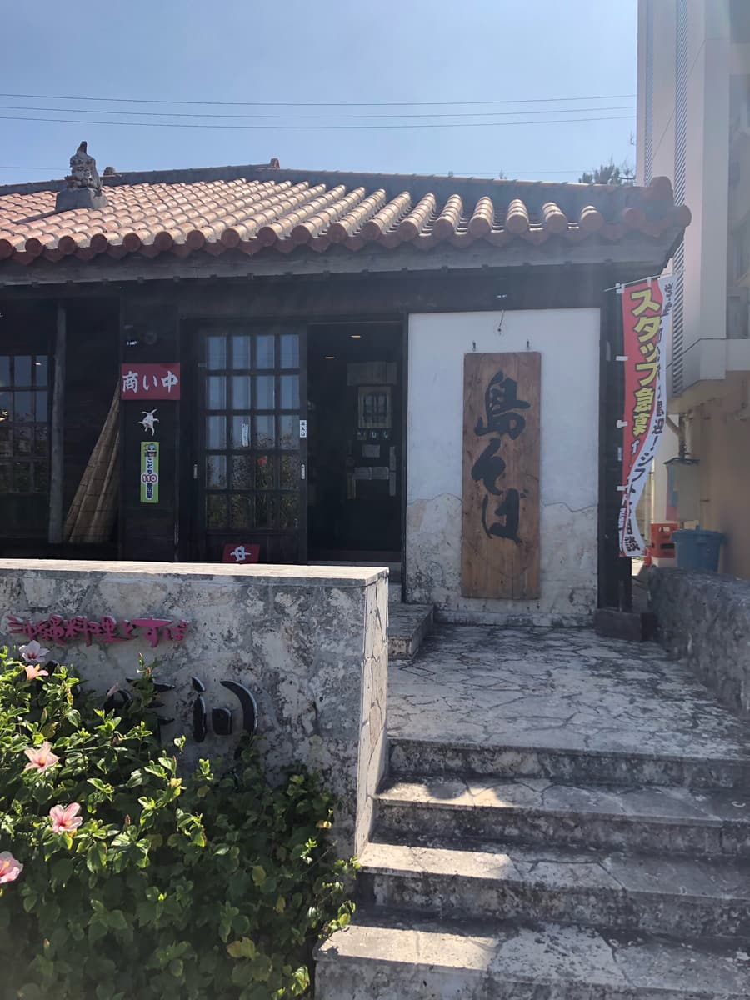
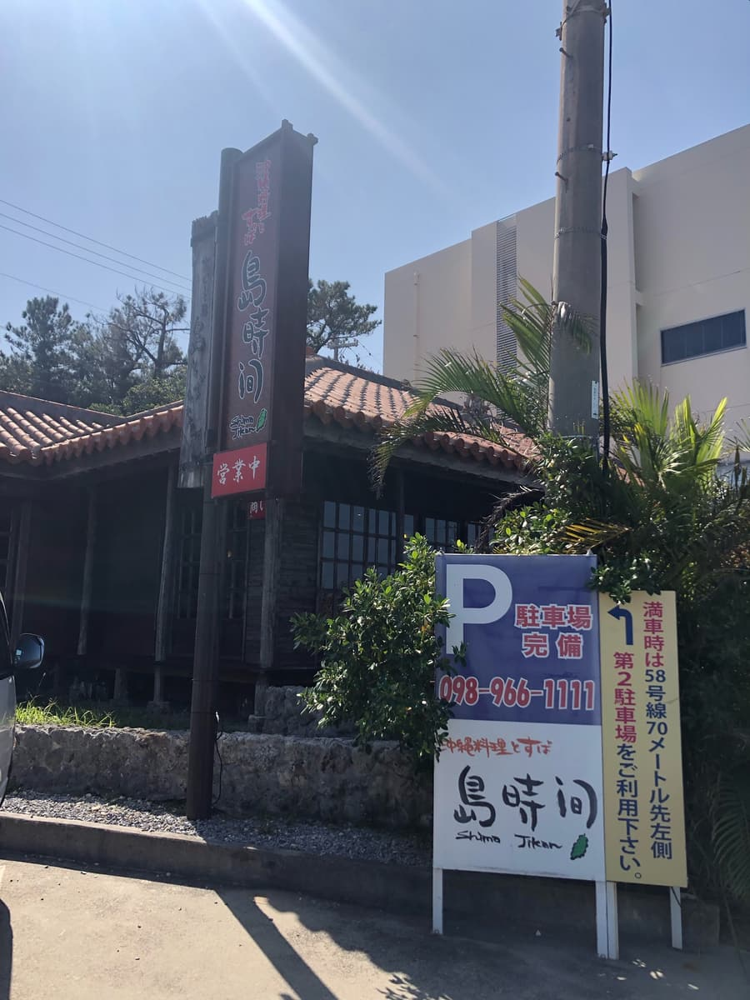
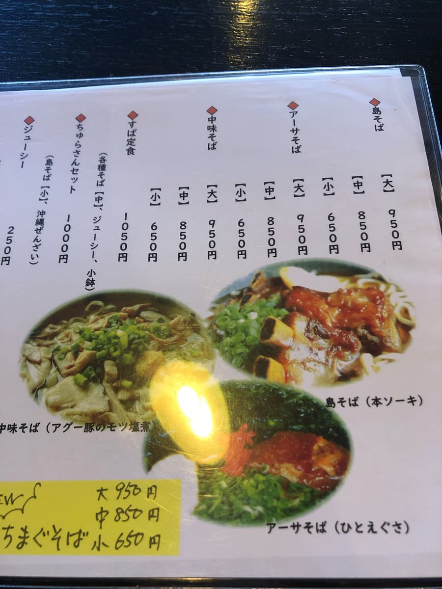
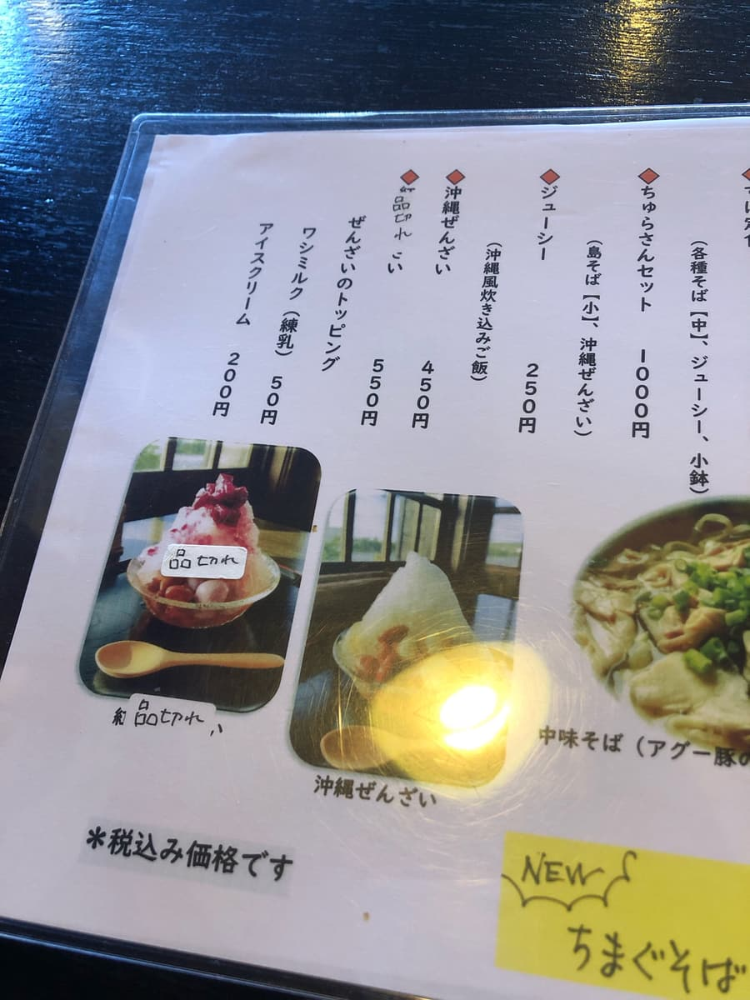
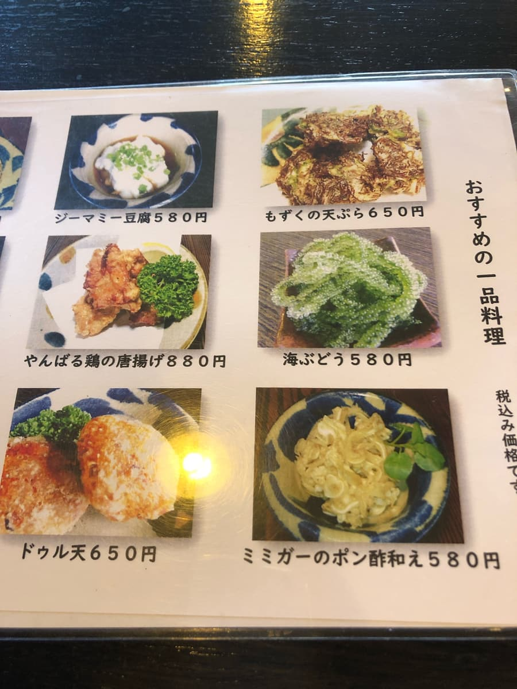
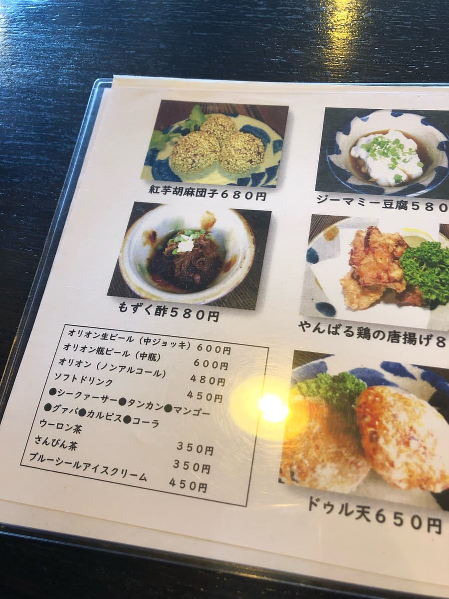
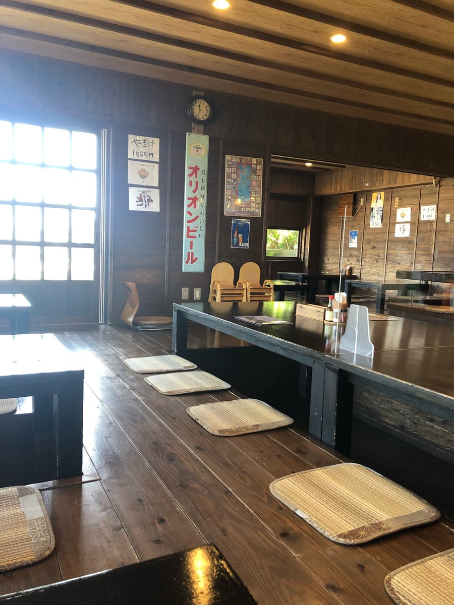
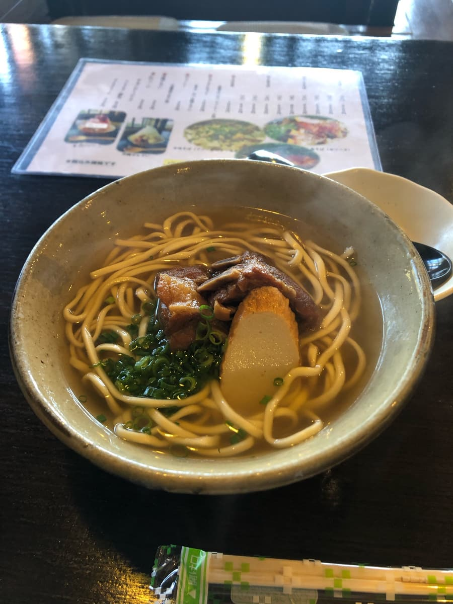
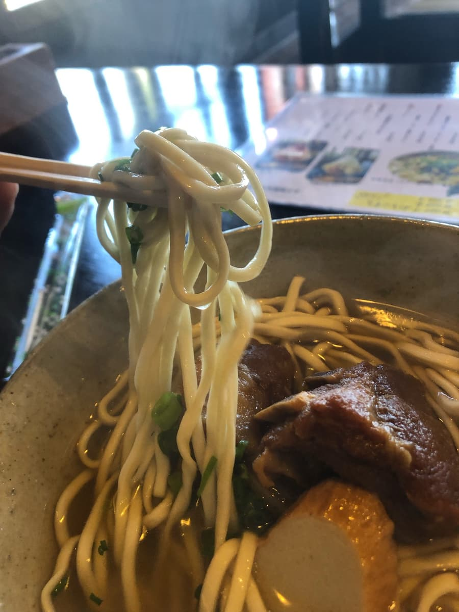

I ate here in February 2024 😄


But even just among the shops I've eaten at, like “Sanchome no Shima Soba-ya (Ginowan City),” “Shima Soba Ichibanchi (Naha City),” and “Shima Soba (Uruma City),” there are a lot of Okinawa soba shops with “Shima” (island) in their names; I guess it's because it feels Okinawan 😆
I'm looking forward to seeing whether I'll come across more shops with “Shima” in the future 😄




From the menu, I ordered the “island soba (shima soba),” which has “Shima” just like the shop's name 😁

Since the exterior has red tiles, the interior is in an old Okinawan folk house style too, and it seems like it would appeal to tourists 😄 The background music is Okinawan folk songs too, which also seems like it would appeal.

A sip of the soup. The bonito broth really comes through. However, I felt the saltiness was a bit strong. It's salty.

Next, I have the noodles. The noodles are a thin straight type. They feel soft. The topping, the soki, is tender too, but has a sinewy texture.
Rating (9/15): Just plain delicious. It's an Okinawa soba shop in the tourist area of Onna Village, so how about trying it when you come sightseeing? You can feel the Okinawan vibe 😁
Noodles: ★★★☆☆（3）
Soup: ★★★☆☆（3）
Toppings: ★★★☆☆（3）